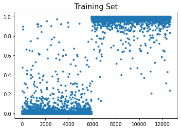
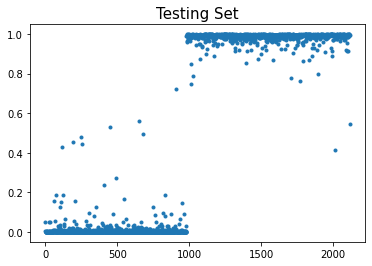

import torch
import torchvision
from fastai.vision.all import *
import timeDL CNN 정리
- toc:true
CNN 구조
간략하게 CNN의 구조를 설명하자면
- conv layer: 커널층(선형변환처럼 feature를 늘려주는 역할)
- ReLU layer: 비선형을 추가해 표현력을 늘려주는 역할
- pooling layer: max 또는 avg를 통해 데이터를 요약해주는 역할
conv layer
torch.manual_seed(43052)
_conv = torch.nn.Conv2d(1,1,(2,2)) # 입력1, 출력1, (2,2) window size
# (굳이 (2,2) 이런식으로 안해도 됨 어차피 윈도우 사이즈는 정사각행렬이므로 상수하나만 입력해도 됨됨)
_X = torch.arange(0,25).float().reshape(1,5,5)
_Xtensor([[[ 0., 1., 2., 3., 4.],
[ 5., 6., 7., 8., 9.],
[10., 11., 12., 13., 14.],
[15., 16., 17., 18., 19.],
[20., 21., 22., 23., 24.]]])_conv.weight.data = torch.tensor([[[[0.25, 0.25],[0.25,0.25]]]])
_conv.bias.data = torch.tensor([0.0])
_conv.weight.data, _conv.bias.data(tensor([[[[0.2500, 0.2500],
[0.2500, 0.2500]]]]), tensor([0.]))_conv(_X)tensor([[[ 3., 4., 5., 6.],
[ 8., 9., 10., 11.],
[13., 14., 15., 16.],
[18., 19., 20., 21.]]], grad_fn=<SqueezeBackward1>)conv_tensor[1,1] = [[0, 1],[5, 6]]의 평균임을 알 수 있음 (conv.weight가 모두 1/4이어서 그런거임)
- 해당 값은 (0 + 1 + 5 + 6) / 4 임을 알 수 있음
- 윈도우(커널)는 한 칸씩 움직이면서 weight를 곱하고 bias를 더함
- 첫 번째 3이라는 값은 [[0, 1],[5, 6]]에 conv을 적용
- 두 번째 4라는 값은 [[1, 2],[6, 7]]에 conv을 적용
- 첫 번째 3이라는 값은 [[0, 1],[5, 6]]에 conv을 적용
ReLU layer
- 사실 ReLU는 DNN에서와 같이 음수는 0으로 양수는 그대로 되는 함수이다.
\(ReLU(x) = \max(0,x)\)
pooling layer
- pooling layer에는 maxpooling이 있고 avgpooling이 있지만 이번에는 maxpooling을 다룰것임
- maxpooling은 데이터 요약보다는 크기를 줄이는 느낌이 있음
_maxpooling = torch.nn.MaxPool2d((2,2))
_X = torch.arange(0,25).float().reshape(1,5,5)
_Xtensor([[[ 0., 1., 2., 3., 4.],
[ 5., 6., 7., 8., 9.],
[10., 11., 12., 13., 14.],
[15., 16., 17., 18., 19.],
[20., 21., 22., 23., 24.]]])_maxpooling(_X) tensor([[[ 6., 8.],
[16., 18.]]])- maxpooling_tensor[1,1] = [[0, 1],[5, 6]] 중 가장 큰 값을 이므로 5이다.
- pooling은 convlayer와 달리 pooling box가 겹치지 않게 움직임
- 이러한 특성으로 인해 5번째 열과 행에 있는 값들은 pooling box에 들어가지 못해 버려지게 된다
CNN 구현
path = untar_data(URLs.MNIST)
100.03% [15687680/15683414 00:02<00:00]
path 사용법 + 데이터 준비
(path/'원하는 경로').ls()위 코드를 사용하면 폴더 안에 있는 데이터들의 이름을 출력
torchvision.io.read_image()해당 함수에 데이터 이름(이미지 이름)을 넣어주면 이미지를 tensor형태로 출력
# train data
x0 = torch.stack([torchvision.io.read_image(str(fnames)) for fnames in (path/'training/0').ls()])
x1 = torch.stack([torchvision.io.read_image(str(fnames)) for fnames in (path/'training/1').ls()])
x_tr = torch.concat([x0, x1])/255
y_tr = torch.tensor([0.0]*len(x0) + [1.0]*len(x1)).reshape(-1,1)# train data
x0 = torch.stack([torchvision.io.read_image(str(fnames)) for fnames in (path/'testing/0').ls()])
x1 = torch.stack([torchvision.io.read_image(str(fnames)) for fnames in (path/'testing/1').ls()])
x_test = torch.concat([x0, x1])/255
y_test = torch.tensor([0.0]*len(x0) + [1.0]*len(x1)).reshape(-1,1)x_tr.shape, y_tr.shape, x_test.shape, y_test.shape(torch.Size([12665, 1, 28, 28]),
torch.Size([12665, 1]),
torch.Size([2115, 1, 28, 28]),
torch.Size([2115, 1]))cnn에 사용되는 layer 알아보기
# conv
c1 = torch.nn.Conv2d(1, 16 , 5) # 만약 color image였다면 입력 채널의 수를 3으로 지정해야 함
x_tr.shape ,c1(x_tr).shape(torch.Size([12665, 1, 28, 28]), torch.Size([12665, 16, 24, 24]))- size계산 공식: 윈도우(커널)사이즈가 n이면 \(size = height(width) - ( n - 1)\)
# ReLU
a1 = torch.nn.ReLU()# maxpooling
m1 = torch.nn.MaxPool2d(2)
print(m1(a1(c1(x_tr))).shape)torch.Size([12665, 16, 12, 12])- 행과 열이 2의 배수이므로 maxpool이 2일때는 버려지는 행과 열은 없다.
# flatten(이미지를 한줄로 펼치는 것)
f1 = torch.nn.Flatten()
print(f1(a1(m1(c1(x_tr)))).shape) #16 * 12 * 12 = 2304torch.Size([12665, 2304])# sigmoid에 올리기 위해서는 2304 디멘젼을 1로 만들어야함
l1=torch.nn.Linear(in_features=2304,out_features=1) # sigmoid (값이 0에서 1사이의 값, 즉 확률로 출력되도록)
a2 = torch.nn.Sigmoid()
print(a2(f1(a1(m1(c1(x_tr))))).shape)torch.Size([12665, 2304])print('이미지 사이즈: ', x_tr.shape)
print('conv: ',c1(x_tr).shape)
print('(ReLU) -> maxpooling: ',m1(a1(c1(x_tr))).shape)
print('이미지 펼치기: ',f1(a1(m1(c1(x_tr)))).shape)
print('이미지를 하나의 스칼라로 선형변환: ',l1(f1(a1(m1(c1(x_tr))))).shape)
print('시그모이드: ',a2(l1(f1(a1(m1(c1(x_tr)))))).shape)이미지 사이즈: torch.Size([12665, 1, 28, 28])
conv: torch.Size([12665, 16, 24, 24])
(ReLU) -> maxpooling: torch.Size([12665, 16, 12, 12])
이미지 펼치기: torch.Size([12665, 2304])
이미지를 하나의 스칼라로 선형변환: torch.Size([12665, 1])
시그모이드: torch.Size([12665, 1])networks 설계
- 원래라면 아래와 같은 코드를 사용하여 network를 학습시키겠지만 CNN과 같이 파라미터가 많은 network는 CPU로 연산시 학습할때 시간이 오래걸림
loss_fn=torch.nn.BCELoss()
optimizr= torch.optim.Adam(net.parameters())
t1= time.time()
for epoc in range(100):
## 1
yhat=net(x_tr)
## 2
loss=loss_fn(yhat,y_tr)
## 3
loss.backward()
## 4
optimizr.step()
optimizr.zero_grad()
t2 = time.time()
t2-t1\(\to\) overview때 배운 fastai에 있는 데이터로더를 사용하면 GPU를 사용해 연산을 할 수 있다.
# 데이터 로더에 들어갈 데이터세트 준비
ds_tr = torch.utils.data.TensorDataset(x_tr, y_tr)
ds_test = torch.utils.data.TensorDataset(x_test, y_test)- 데이터 로더는 배치크기를 지정해줘야 함
len(x_tr), len(x_test)(12665, 2115)- 데이터가 각각 12665, 2115개씩 들어가 있으므로 한번 업데이트할 때 총 데이터의 1 /10을 쓰도록 아래와 같이 배치 크기를 줌
- stochastic gradient descent(구용어: mini-batch gradient descent)
# 데이터 로더
dl_tr = torch.utils.data.DataLoader(ds_tr,batch_size=1266)
dl_test = torch.utils.data.DataLoader(ds_test,batch_size=2115) dls = DataLoaders(dl_tr,dl_test)net = torch.nn.Sequential(
# conv layer
c1,
# ReLU
a1,
# maxpool
m1,
# flatten
f1,
# linear transform (n -> 1)
l1,
# Sigmoid
a2
)
loss_fn=torch.nn.BCELoss()lrnr = Learner(dls,net,loss_fn) # fastai의 Learner는 오미타이저의 기본값이 adam이므로 따로 지정해주지 않아도 됨lrnr.fit(10)| epoch | train_loss | valid_loss | time |
|---|---|---|---|
| 0 | 0.979273 | 0.639250 | 00:05 |
| 1 | 0.703008 | 0.402466 | 00:00 |
| 2 | 0.547401 | 0.256881 | 00:00 |
| 3 | 0.434025 | 0.142217 | 00:00 |
| 4 | 0.340996 | 0.079636 | 00:00 |
| 5 | 0.267902 | 0.048050 | 00:00 |
| 6 | 0.211895 | 0.031742 | 00:00 |
| 7 | 0.169176 | 0.022921 | 00:00 |
| 8 | 0.136331 | 0.017658 | 00:00 |
| 9 | 0.110770 | 0.014233 | 00:00 |
Learner 오브젝트에 들어간 net은 gpu상에 있도록 되어있음 >
python net[0].weight위 코드를 출력하면 weight tensor가 출력되는데 가장 밑을 확인하면 device = ’cuda:0’라는 것이 있음. 이는 해당 tensor가 gpu상에 위치해있는 것을 의미한다.+tensor 연산을 할 때에는 모든 tensor가 같은 곳에 위치해있어야 한다.
net = net.to('cpu')
plt.plot(net(x_tr).data,'.')
plt.title("Training Set",size=15)Text(0.5, 1.0, 'Training Set')
plt.plot(net(x_test).data,'.')
plt.title("Testing Set",size=15)Text(0.5, 1.0, 'Testing Set')
Loss function
BCEWithLogitsLoss
- BCEWithLogitsLoss = Sigmoid + BCELoss
- 손실함수로 이를 사용하면 network 마지막에 시그모이드 함수를 추가하지 않아도 됨
- 이를 사용하면 수치적으로 더 안정이 된다는 장점이 있음
k개의 클래스를 분류하는 모델
다중(k개) 클래스를 분류
- LossFunction: CrossEntrophyLoss
- ActivationFunction: SoftmaxFunction
- 마지막 출력층: torch.nn.Linear(n, k)
SoftmaxFunction
- 소프트맥스 함수가 계산하는 과정은 아래와 같음
\(softmax=\frac{e^{a 또는 b 또는 c}}{e^{a} + e^{b} + e^{c}}\) (3개를 분류할 경우)
CrossEntropy Loss
- k개의 클래스를 분류하는 모델의 Loss 계산 방법
sftmax(_netout) # -> 0 ~ 1 사이의 값 k개 출력
torch.log(sftmax(_netout)) # -> 0 ~ 1사이의 값을 로그에 넣게 되면 -∞ ~ 0사이의 값 k개 출력
- torch.log(sftmax(_netout)) * _y_onehot
# 만약 값이 log(sftmax(_netout)) = [-2.2395, -2.2395, -0.2395] 이렇게 나오고
#y_onehot이 [1, 0, 0]이라면 해당 코드의 결과, 즉 loss는 2.2395이 된다. 이를 수식으로 정리하면 다음과 같음
CrossEntropy = \(- \log (Softmax(x)) * Ground Truth_{onehot}(y)\)만약 모델이 첫 번째 값이 확실하게 정답이라고 생각한다면 로그의 결과값은 0이 된다 -> 해당 값이 정답일경우 0 * 1 = 0이므로 loss는 0이 된다
최종적으로는 위 코드를 통해 얻은 Loss를 평균을 내어 출력한다.
+ 위의 설명은 정답이 원-핫 인코딩 형식으로 되어있을 때의 Loss계산 방법임
+ 정답이 vector + 정수형으로 되어 있을 때의 Loss계산 방법은 잘 모르겠음
정답(y)의 형태
type 1) int형을 사용하는 방법 (vector)
type 2) float형을 사용하는 방법 (one-hot encoded vector)
만약 사슴, 강아지, 고양이를 분류하는 모델이라면
- type 1)의 경우 <사슴: 0, 강아지: 1, 고양이: 2> (단, 데이터 형태는는 int(정수))
- type 2)의 경우 <사슴: [1, 0, 0], 강아지: [0, 1, 0], 고양이: [0, 0, 1] > (단, 데이터의 형태는 float(실수))
vector(int)
X0 = torch.stack([torchvision.io.read_image(str(fname)) for fname in (path/'training/0').ls()])
X1 = torch.stack([torchvision.io.read_image(str(fname)) for fname in (path/'training/1').ls()])torch.tensor([0]*len(X0) + [1]*len(X1))#.reshape(-1,1)tensor([0, 0, 0, ..., 1, 1, 1])one-hot encoded vector(float)
yy = torch.tensor([0]*len(X0) + [1]*len(X1))#.reshape(-1,1)
torch.nn.functional.one_hot(yy).float()tensor([[1., 0.],
[1., 0.],
[1., 0.],
...,
[0., 1.],
[0., 1.],
[0., 1.]])다중 클래스 분류 모델
# train
X0 = torch.stack([torchvision.io.read_image(str(fname)) for fname in (path/'training/0').ls()])
X1 = torch.stack([torchvision.io.read_image(str(fname)) for fname in (path/'training/1').ls()])
X2 = torch.stack([torchvision.io.read_image(str(fname)) for fname in (path/'training/2').ls()])
X = torch.concat([X0,X1,X2])/255
y = torch.tensor([0]*len(X0) + [1]*len(X1)+ [2]*len(X2))#.reshape(-1,1)# test
X0 = torch.stack([torchvision.io.read_image(str(fname)) for fname in (path/'testing/0').ls()])
X1 = torch.stack([torchvision.io.read_image(str(fname)) for fname in (path/'testing/1').ls()])
X2 = torch.stack([torchvision.io.read_image(str(fname)) for fname in (path/'testing/2').ls()])
XX = torch.concat([X0,X1,X2])/255
yy = torch.tensor([0]*len(X0) + [1]*len(X1)+ [2]*len(X2))#.reshape(-1,1)len(X) # 1862318623ds1 = torch.utils.data.TensorDataset(X,y)
ds2 = torch.utils.data.TensorDataset(XX,yy)
dl1 = torch.utils.data.DataLoader(ds1,batch_size=1862) # 에폭당 11번= 1862 꽉 채워서 10번하고 3개정도 남은 걸로 한 번
dl2 = torch.utils.data.DataLoader(ds2,batch_size=3147) # test는 전부다 넣어서
dls = DataLoaders(dl1,dl2) net = torch.nn.Sequential(
torch.nn.Conv2d(1,16,(5,5)),
torch.nn.ReLU(),
torch.nn.MaxPool2d((2,2)),
torch.nn.Flatten(),
torch.nn.Linear(2304,3) # 0,1,2 3개를 구분하는 문제이므로 out_features=3
)
loss_fn = torch.nn.CrossEntropyLoss() # 여기에는 softmax함수가 내장되어 있음
#-> net마지막에 softmax를 넣으면 안됨
# BCEWithLogitsLoss 느낌(시그모이드 + BCE)lrnr = Learner(dls,net,loss_fn) # 옵티마이저는 아답이 디폴트 값이어서 굳이 안넣어도 됨lrnr.fit(10) | epoch | train_loss | valid_loss | time |
|---|---|---|---|
| 0 | 1.797101 | 1.103916 | 00:00 |
| 1 | 1.267011 | 0.823797 | 00:00 |
| 2 | 1.055513 | 0.667210 | 00:00 |
| 3 | 0.910746 | 0.435414 | 00:00 |
| 4 | 0.762887 | 0.284001 | 00:00 |
| 5 | 0.625515 | 0.199502 | 00:00 |
| 6 | 0.515352 | 0.152906 | 00:00 |
| 7 | 0.429145 | 0.123678 | 00:00 |
| 8 | 0.359694 | 0.105466 | 00:00 |
| 9 | 0.303888 | 0.092883 | 00:00 |
lrnr.model.to("cpu")
pd.DataFrame(lrnr.model(XX)).assign(y=yy) | 0 | 1 | 2 | y | |
|---|---|---|---|---|
| 0 | 0.981043 | -9.135092 | -1.149270 | 0 |
| 1 | -0.292905 | -4.281692 | -0.924575 | 0 |
| 2 | 4.085316 | -9.199694 | -3.482234 | 0 |
| 3 | 2.484926 | -9.336347 | -3.127304 | 0 |
| 4 | 3.310040 | -12.257785 | -2.177761 | 0 |
| ... | ... | ... | ... | ... |
| 3142 | -1.138366 | -5.435792 | 0.370670 | 2 |
| 3143 | -4.458741 | -4.281343 | 2.052410 | 2 |
| 3144 | -2.836508 | -3.204013 | 0.012610 | 2 |
| 3145 | -1.704158 | -10.621873 | 2.024313 | 2 |
| 3146 | -2.467648 | -4.612999 | 0.656284 | 2 |
3147 rows × 4 columns
pd.DataFrame(lrnr.model(XX)).assign(y=yy).query('y==0')| 0 | 1 | 2 | y | |
|---|---|---|---|---|
| 0 | 0.981043 | -9.135092 | -1.149270 | 0 |
| 1 | -0.292905 | -4.281692 | -0.924575 | 0 |
| 2 | 4.085316 | -9.199694 | -3.482234 | 0 |
| 3 | 2.484926 | -9.336347 | -3.127304 | 0 |
| 4 | 3.310040 | -12.257785 | -2.177761 | 0 |
| ... | ... | ... | ... | ... |
| 975 | 0.432969 | -5.653580 | -1.944451 | 0 |
| 976 | 2.685695 | -10.254354 | -2.466680 | 0 |
| 977 | 2.474842 | -9.650204 | -2.452746 | 0 |
| 978 | 1.268743 | -6.928779 | -1.419695 | 0 |
| 979 | 4.371464 | -8.959077 | -4.056257 | 0 |
980 rows × 4 columns
- 0으로 분류한 것들은 첫번째 열(0)의 값이 가장 큼
소프트맥스와 시그모이드
- 이진 분류시에는 소프트맥스와 시그모이드 모두 activation function으로 사용할 수 있지만 소프트맥스를 사용하면 출력층이 2개가 되므로 파라미터 낭비가 심해진다.
- 이진 분류시에는 시그모이드를 사용하는 것이 적합함.
- 소프트맥스는 3개 이상을 분류해야 할 경우에 사용하면 됨
메트릭이용
- fastai에서 지원
- fastai를 사용해 학습(lrnr.fit())을 할때 loss_value만 나오는 것이 아니라 error_rate과 정확도가 나오게 할 수 있는 옵션
- y의 형태를 주의해서 사용해야 함
- 앞서 말한 것처럼 두 가지 타입이 있음
- vector + int
- one-hot encoded vector + float
- 앞서 말한 것처럼 두 가지 타입이 있음
type 1) y의 형태가 vector + int일 때 - metrics = accuracy를 사용해야 함
# train
X0 = torch.stack([torchvision.io.read_image(str(fname)) for fname in (path/'training/0').ls()])
X1 = torch.stack([torchvision.io.read_image(str(fname)) for fname in (path/'training/1').ls()])
X = torch.concat([X0,X1])/255y = torch.tensor([0.0]*len(X0) + [1.0]*len(X1)).reshape(-1,1)
y.to(torch.int64).reshape(-1)tensor([0, 0, 0, ..., 1, 1, 1])# test
X0 = torch.stack([torchvision.io.read_image(str(fname)) for fname in (path/'testing/0').ls()])
X1 = torch.stack([torchvision.io.read_image(str(fname)) for fname in (path/'testing/1').ls()])
XX = torch.concat([X0,X1])/255yy = torch.tensor([0.0]*len(X0) + [1.0]*len(X1)).reshape(-1,1)
yy.to(torch.int64).reshape(-1)tensor([0, 0, 0, ..., 1, 1, 1])ds1 = torch.utils.data.TensorDataset(X,y.to(torch.int64).reshape(-1))
ds2 = torch.utils.data.TensorDataset(XX,yy.to(torch.int64).reshape(-1))
dl1 = torch.utils.data.DataLoader(ds1,batch_size=1266)
dl2 = torch.utils.data.DataLoader(ds2,batch_size=2115)
dls = DataLoaders(dl1,dl2) net = torch.nn.Sequential(
torch.nn.Conv2d(1,16,(5,5)),
torch.nn.ReLU(),
torch.nn.MaxPool2d((2,2)),
torch.nn.Flatten(),
torch.nn.Linear(2304,2)
)
loss_fn = torch.nn.CrossEntropyLoss()
lrnr = Learner(dls,net,loss_fn,metrics=[accuracy,error_rate])lrnr.fit(10)| epoch | train_loss | valid_loss | accuracy | error_rate | time |
|---|---|---|---|---|---|
| 0 | 1.128365 | 0.601474 | 0.463357 | 0.536643 | 00:00 |
| 1 | 0.684630 | 0.304262 | 0.975414 | 0.024586 | 00:00 |
| 2 | 0.503124 | 0.144147 | 0.989598 | 0.010402 | 00:00 |
| 3 | 0.373899 | 0.068306 | 0.996217 | 0.003783 | 00:00 |
| 4 | 0.281332 | 0.040790 | 0.996217 | 0.003783 | 00:00 |
| 5 | 0.215743 | 0.026980 | 0.996690 | 0.003310 | 00:00 |
| 6 | 0.168349 | 0.019467 | 0.996690 | 0.003310 | 00:00 |
| 7 | 0.133313 | 0.014856 | 0.998109 | 0.001891 | 00:00 |
| 8 | 0.106776 | 0.011745 | 0.998109 | 0.001891 | 00:00 |
| 9 | 0.086275 | 0.009553 | 0.999054 | 0.000946 | 00:00 |
type 2) y의 형태가 one-hot encoded vector + float일 때 - metrics = accuracy_multi를 사용해야 함 - error_rate는 사용못함
y_onehot = torch.tensor(list(map(lambda x: [1.0,0.0] if x==0 else [0.0,1.0], y)))
yy_onehot = torch.tensor(list(map(lambda x: [1.0,0.0] if x==0 else [0.0,1.0], yy)))y_onehot = torch.nn.functional.one_hot(y.reshape(-1).to(torch.int64)).to(torch.float32)
yy_onehot = torch.nn.functional.one_hot(yy.reshape(-1).to(torch.int64)).to(torch.float32)- torch.nn.functional.one_hot() 함수 조건
- 기본적으로 크기가 n인 벡터가 들어오길 기대
- 정수가 들어오는 것을 기대
- 하지만 원-핫 인코딩을 사용할 때에는 실수형으로 저장 되어야 하므로 마지막에 실수형으로 바꿔줘야 함
ds1 = torch.utils.data.TensorDataset(X,y_onehot)
ds2 = torch.utils.data.TensorDataset(XX,yy_onehot)
dl1 = torch.utils.data.DataLoader(ds1,batch_size=1266)
dl2 = torch.utils.data.DataLoader(ds2,batch_size=2115)
dls = DataLoaders(dl1,dl2) net = torch.nn.Sequential(
torch.nn.Conv2d(1,16,(5,5)),
torch.nn.ReLU(),
torch.nn.MaxPool2d((2,2)),
torch.nn.Flatten(),
torch.nn.Linear(2304,2),
#torch.nn.Softmax()
)
loss_fn = torch.nn.CrossEntropyLoss()
lrnr = Learner(dls,net,loss_fn,metrics=[accuracy_multi])lrnr.fit(10)| epoch | train_loss | valid_loss | accuracy_multi | time |
|---|---|---|---|---|
| 0 | 1.213650 | 0.647844 | 0.463357 | 00:00 |
| 1 | 0.744869 | 0.384000 | 0.933570 | 00:00 |
| 2 | 0.571879 | 0.187119 | 0.986525 | 00:00 |
| 3 | 0.432096 | 0.090841 | 0.994563 | 00:00 |
| 4 | 0.326718 | 0.048868 | 0.995508 | 00:00 |
| 5 | 0.250235 | 0.028477 | 0.996217 | 00:00 |
| 6 | 0.194605 | 0.018616 | 0.996454 | 00:00 |
| 7 | 0.153338 | 0.013278 | 0.996927 | 00:00 |
| 8 | 0.122056 | 0.010130 | 0.997872 | 00:00 |
| 9 | 0.097957 | 0.008112 | 0.998109 | 00:00 |